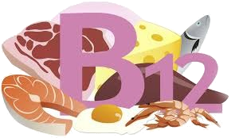

שלב 4-ויטמין B12
לדני יש חוסר בB12 הוריו הכינו רשימת קניות אך הם אינם יודעים כמה מהמוצרים אינם מכילים B12, עזרו להוריו של דני לדעת בכמה מוצרים אין B12.
תפקיד: ייצור ההמוגלובין בגוף, העברת המסר העצבי מהגוף למרכז העצבים, תהליכי עיכול ,תפקידי תאי עצם.
סימני מחסור: אנמיה, התקף לב, פיגור
מצוי ב: בשר בקר, עופות, דגים, ביצים, חלב ומוצרי חלב.
חשוב לדעת שוויטמין B12 אינו מופיע במאכלים מהצומח. עם זאת, נמכרים מזונות מהצומח שהועשרו בוויטמין הזה, למשל דגני בוקר. גם שמרי בירה עשויים להכיל כמות קטנה של ויטמין B12.
ויטמין B12 הוא מסיס במים, וכאשר צורכים יותר מדי ממנו, הגוף מפריש את העודפים בשתן. לא ידועים תסמינים של רעילות של מינון יתר כתוצאה מוויטמין B12, כל עוד לא נוטלים כמות גדולה יותר מזו שמצוין על התווית או מזו שהרופא ממליץ.
מחקרים מדעיים רבים כבר הוכיחו את חשיבותו המכרעת של ויטמין B12 לתפקוד תקין של מערכת העצבים והמוח, והגדירו אותו כנחוץ ביותר, בכל גיל, לשמירה על המערכת העצבית בגוף, לרבות התפקודים הקוגניטיביים ומצב הרוח והוא אף משפיע על הפרשת מלטונין תקינה שחשובה לתהליכי ההירדמות ולשינה סדירה.
מחסור בויטמין B12 בא לידי ביטוי בתחושה בריאותית-כללית ירודה. בין יתר הסימפטומים ניתן לזהות בעיות ביכולת הריכוז ובזיכרון, ירידה מתמשכת במצב הרוח עד לכדי תחושת דיכאון, עייפות תמידית, סחרחורות, טנטון, מיגרנות, לחץ דם נמוך, תחושת קור בלתי מוסברת, נשירת שיער, השמנה, שינויים הורמונליים מהירים וקיצוניים וכן עקצוץ או נימול בגפיים.

רשימת הקניות של הוריו של דני:
תירס, עגבניה, בשר בקר, מלפפון, סלמון, קוטג